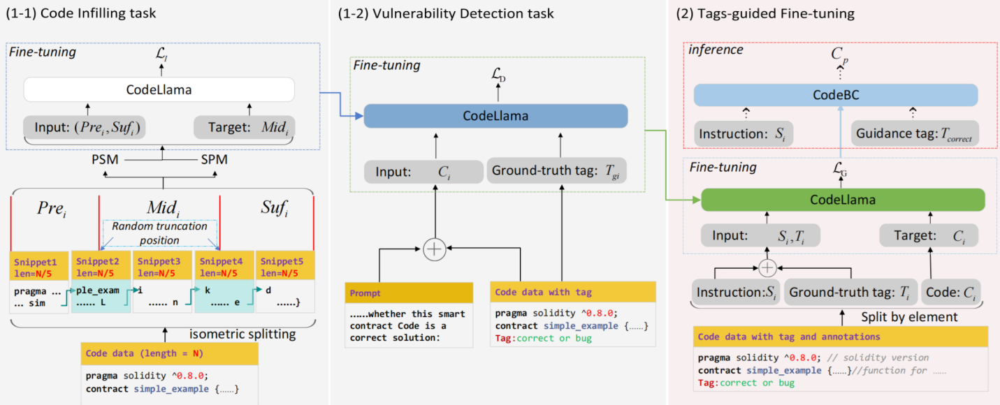

CodeBC: A Blockchain Smart Contract Code Generation Model
1. 项目背景
随着区块链技术的迅猛发展，其在金融、供应链、医疗和能源等领域的应用逐步深化。作为区块链技术的核心组成部分，智能合约实现了区块链的可编程性，使其能够自动执行预定义的交易规则，显著提升了交易的效率和透明度。然而，智能合约的安全性一直是一个重要的研究方向。
历史数据表明，由于智能合约中的漏洞被恶意利用，用户常常遭受重大经济损失。例如，重入攻击等经典漏洞不仅带来了直接的经济威胁，还严重影响了区块链系统的公信力和发展潜力。
目前，智能合约的开发主要依赖于人工编写，这对开发者的技术水平和经验提出了较高的要求。区块链开发人员不仅需要掌握 Solidity 等特定领域语言，还需要熟悉区块链底层原理和安全性保障。然而，根据行业数据，全球仅有不到三万名活跃的区块链开发者，却需要服务于超过一亿的区块链用户，这种严重的不匹配直接导致了开发效率低下和安全风险的增加。
基于以上背景，如何高效地生成安全、稳定的智能合约代码成为区块链领域亟待解决的难题。
近年来，随着大型语言模型（Large Language Models, LLMs）的快速发展，以 OpenAI 的 CodeX 和 Meta 的 CodeLlama 为代表的代码生成模型展现出强大的潜力。然而，现有的通用代码生成模型在处理区块链智能合约时表现出以下不足：
缺乏领域专用优化：这些模型主要关注代码的编译和功能实现，而智能合约特有的漏洞（如重入攻击和权限控制问题）却未能被充分检测。
安全性保障不足：生成的代码中可能隐含高风险漏洞，对区块链应用的稳定性和安全性构成威胁。
领域数据匮乏：智能合约数据通常较少且标签稀缺，导致模型难以在该领域有效学习。
为了解决上述问题，我们提出了一种全新的智能合约代码生成模型——CodeBC，专注于区块链领域的安全代码生成。
2. 模型架构
CodeBC 基于 CodeLlama，设计了两阶段微调架构：
阶段 1：多任务微调
包含两个核心任务： - 代码填充任务：学习代码上下文与结构信息，用于生成高质量代码。 - 漏洞检测任务：通过分析代码安全性标签 (“correct”/”bug”)，增强漏洞识别能力。
阶段 2：标签导向的指令微调
通过结合自然语言指令与安全标签，生成满足功能需求且安全的智能合约代码。
3. 接口设计
3.1 通用接口设计
环境初始化接口
def initialize_environment(gpu_index: int, seed: int) -> None:
"""
初始化 CodeBC 模型运行环境，包括 GPU 设置和随机数种子。
"""
数据加载接口
def load_dataset(dataset_path: str, task: str) -> Dict:
"""
加载用于微调或推理的数据集。
"""
3.2 阶段 1: 多任务微调接口
代码填充任务接口
def code_fill_task(model, dataset: Dict, tokenizer, epochs: int, lr: float) -> None:
"""
针对代码填充任务的微调接口。
"""
漏洞检测任务接口
def vul_detect_task(model, dataset: Dict, tokenizer, epochs: int, lr: float) -> None:
"""
针对漏洞检测任务的微调接口。
"""
3.3 阶段 2: 标签导向的指令微调接口
def instruction_finetune(model, dataset: Dict, tokenizer, epochs: int, lr: float) -> None:
"""
针对标签导向的指令微调任务的接口。
"""
3.4 推理接口
单指令推理接口
def generate_code(model, instruction: str, safety_label: str) -> str:
"""
根据输入的自然语言指令和安全标签生成智能合约代码。
"""
批量推理接口
def batch_generate_code(model, instructions: List[str], safety_labels: List[str]) -> List[str]:
"""
批量生成智能合约代码。
"""
4. 数据准备
CodeBC 使用以下数据集支持训练与评估：
SASCsmall 数据集：智能合约代码库，标注有漏洞类型和安全标签。
Blockchain-HumanEval 数据集：用于评估生成代码的准确性与安全性。
数据加载命令：
python load_data.py --path ./data/SASCsmall
5. 案例分析
输入指令：实现一个支持存款、取款和余额查询的以太坊电子钱包智能合约。
输出代码：
pragma solidity ^0.8.3;
contract Wallet {
mapping(address => uint) private balances;
function deposit() public payable {
balances[msg.sender] += msg.value;
}
function withdraw(uint amount) public {
require(balances[msg.sender] >= amount, "Insufficient balance");
balances[msg.sender] -= amount;
payable(msg.sender).transfer(amount);
}
function getBalance() public view returns (uint) {
return balances[msg.sender];
}
}